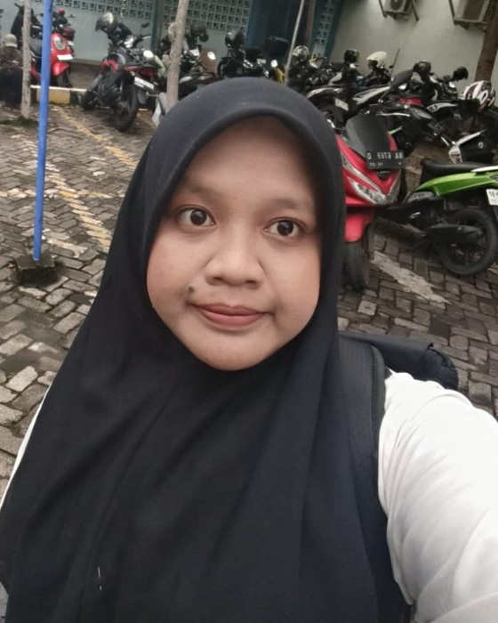
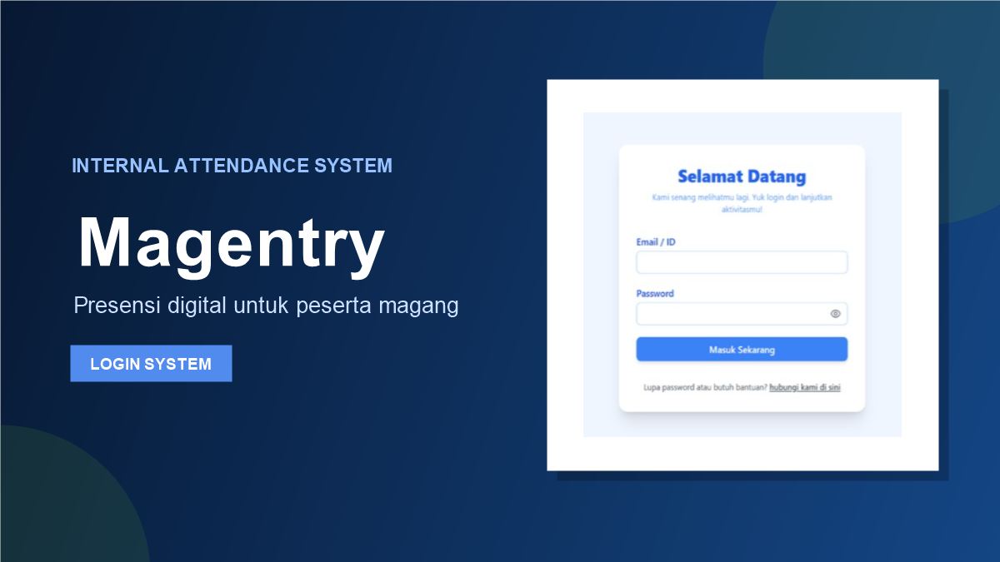
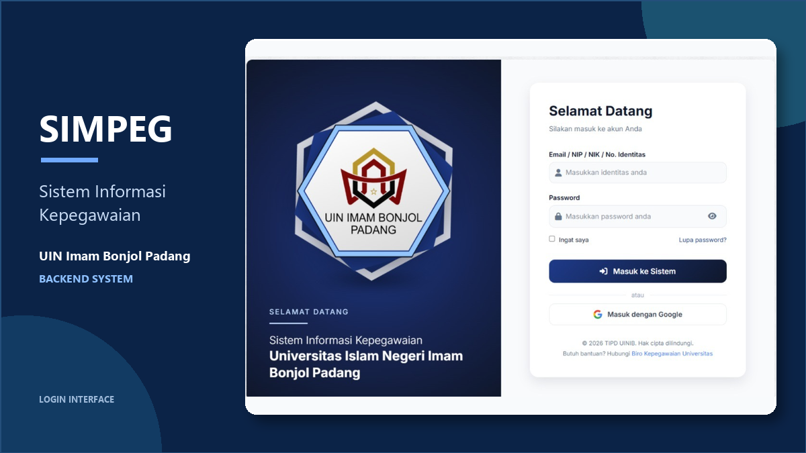

HELLO, I'M RAHMI PUTRI
Membangun solusi digital yang bermakna.
Mahasiswa Sistem Informasi yang tertarik pada software development, web development, backend, frontend, dan database management.
Open to internship opportunities

01 — ABOUT ME
Mengubah rasa ingin tahu menjadi karya.
Halo! Saya Rahmi Putri, mahasiswa Sistem Informasi di UIN Imam Bonjol Padang yang memiliki ketertarikan pada pengembangan aplikasi web. Saya senang mengeksplorasi ide, memahami permasalahan, dan mengubahnya menjadi solusi digital yang fungsional, terstruktur, serta mudah digunakan.
Saya memiliki kemampuan dalam pengembangan aplikasi web, mulai dari perancangan sistem, pengembangan fitur, hingga pengelolaan basis data. Saya selalu terbuka untuk mempelajari teknologi baru, bertukar ide, dan berkolaborasi dalam menciptakan solusi yang bermanfaat.
Full-Stack Developer InternWeb Developer InternICT / IT Support Intern
02 — TECHNICAL SKILLS
Tools I work with.
Kemampuan yang terus saya kembangkan melalui perkuliahan dan proyek praktis.
Frontend Development
Backend Development
Database Management
Tools
Technical Knowledge
03 — SELECTED PROJECTS
Work in progress.
Beberapa proyek yang saya kerjakan di bidang web development dan backend.

Web Development01
Magentry
Sistem presensi digital untuk peserta magang yang menggantikan proses foto WhatsApp dan tanda tangan manual.
View case study ↗
Backend02
SIMPEG UIN Imam Bonjol Padang
Sistem informasi manajemen kepegawaian internal untuk mengelola data, dokumen, dan administrasi pegawai.
View case study ↗04 — EDUCATION
My learning journey.
BACHELOR'S DEGREE · INFORMATION SYSTEMS
UIN Imam Bonjol Padang
Program Studi Sistem Informasi
Sarjana (S1) Sistem Informasi
Undergraduate Student05 — GET IN TOUCH
Let's build something useful.
Punya kesempatan magang, project, atau sekadar ingin berdiskusi? Kirim pesan melalui formulir ini.